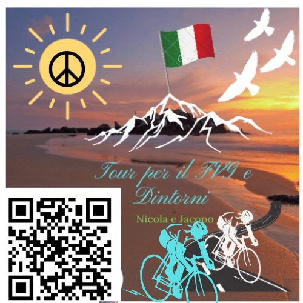

Periodo
Giri in Bici Estate 2023
Tutte le uscite registrate in questo periodo, in ordine cronologico.
Diario
Le uscite
| Data | N. percorso | Luogo | Distanza |
|---|
Album
Le foto del periodo

Riepilogo

Giri in BiciFriuli Venezia Giulia StagioniPeriodo
Tutte le uscite registrate in questo periodo, in ordine cronologico.
Diario
| Data | N. percorso | Luogo | Distanza |
|---|
Album
Riepilogo